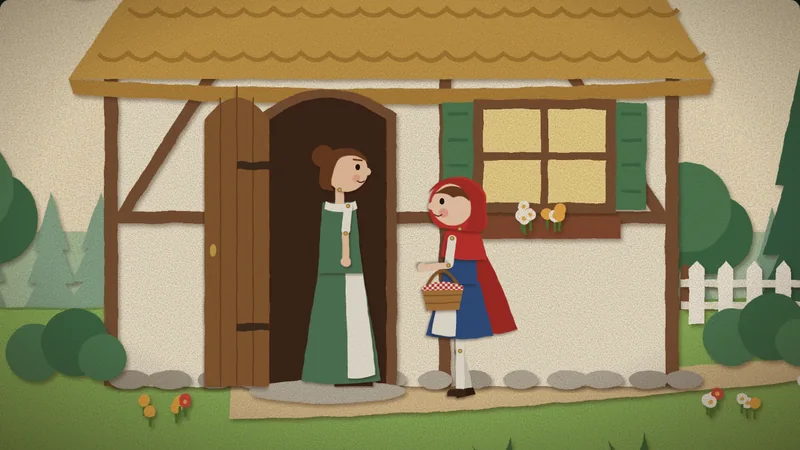
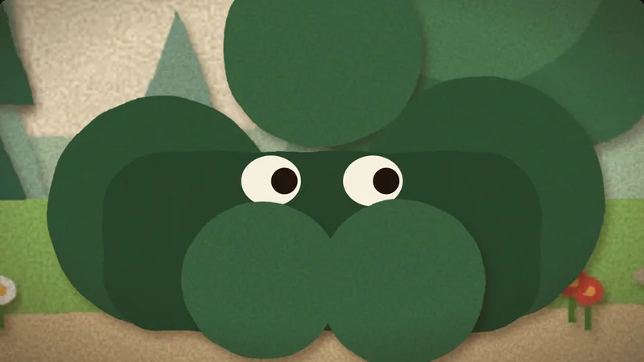
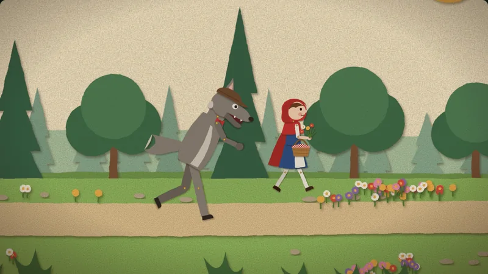
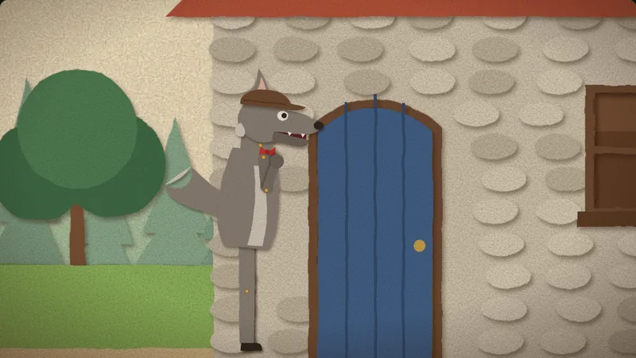
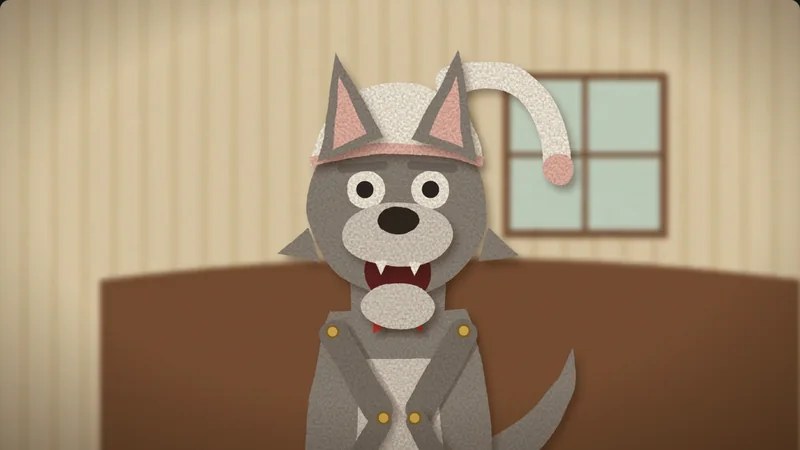
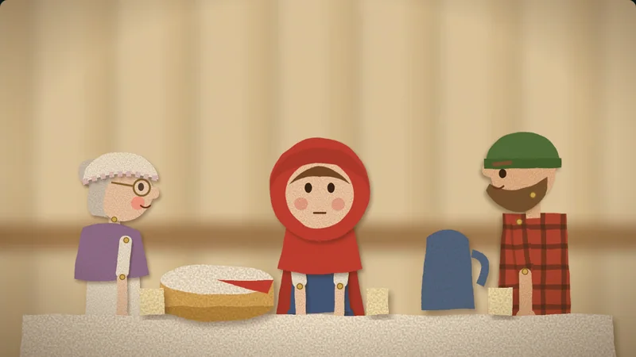
What we set out to do
The Three Little Pigs showed that an image model can paint a lovely world, but every new action needed new drawings. So we asked the opposite question: what if the characters stay simple shapes drawn in code, and look like paper puppets on purpose?
The story is the Brothers Grimm version (1857), retold lightly: Grandma hides in the wardrobe, nobody gets eaten, and the wolf leaves through the window in Grandma's nightcap. In the meadow the film stops for children learning English: Little Red Riding Hood asks for one thing at a time ("Can you find a flower for Grandma? Touch it!"), everything answers a tap with its name, and each miss helps a little more.
Making it look like stop motion
- Twelve frames a second, on twos, so it moves in little jumps, the way a hand-moved puppet does.
- The animator's hand: each frame nudges every puppet by a tiny random amount.
- Paper you can feel: grain, torn edges, a soft shadow, brass pins at the joints.
- Replacement, not morphing: mouths are swapped like stop-motion mouths.
The cast
Five puppets, including a wolf in a flat cap and red bow tie, more polite than he should be. A pose is just a set of joint angles, so a new action, like ducking or diving through a window, costs a few numbers instead of new drawings.
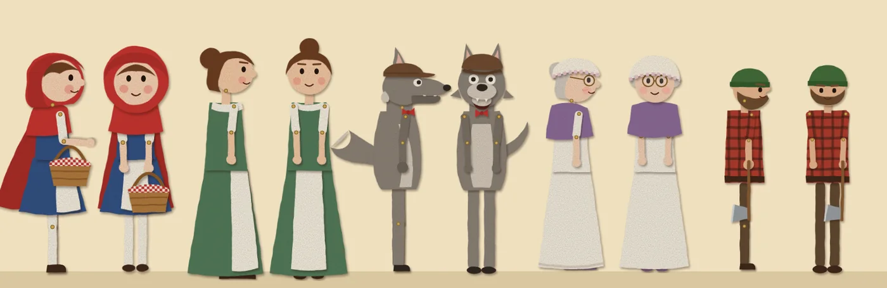
A paper puppet can't rotate, so a turn swaps whole views: side, front, mirrored side. Head and body always turn together; a front head on a side body looked wrong every time.
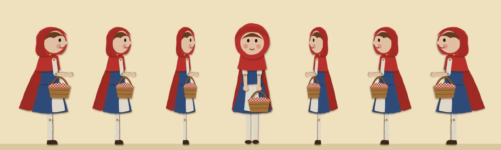
Nine mouth shapes are timed to the voice track, and walks use a compass step, so feet never slide.
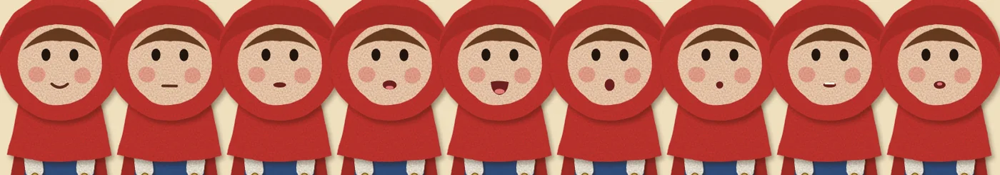
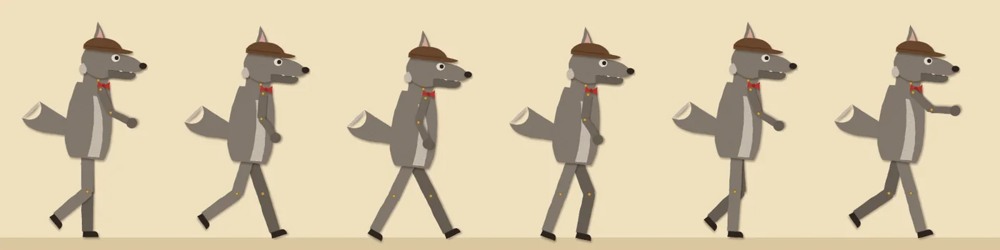
Sets, camera and sound
Each set is layers of paper that slide past each other as the camera moves. Windows and doorways are real holes, so we can see inside a house from outside.
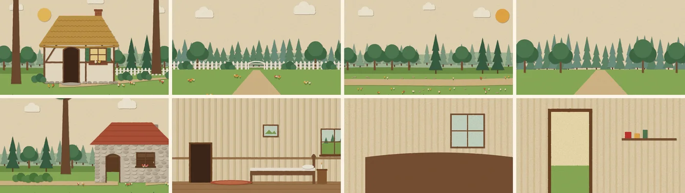
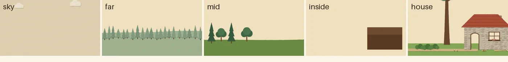
Shots change as in a film, each question to "Grandma" closer than the last. The six ElevenLabs voices act: the wolf squeaks like a little girl at Grandma's door and drops into his own roar on "EAT". The music is the Three Little Pigs' score, reused, and every sound effect is synthesized in code.
The rescue that didn't make sense
In the first cut, the woodcutter appeared from nowhere and the wolf flew out of the window as if Grandma had superpowers. Every shot looked fine; the story didn't hold together. We rewrote it so that each moment causes the next:
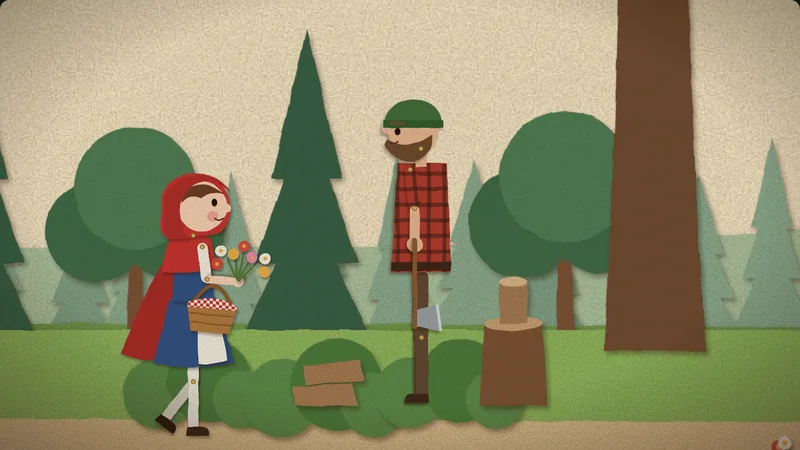
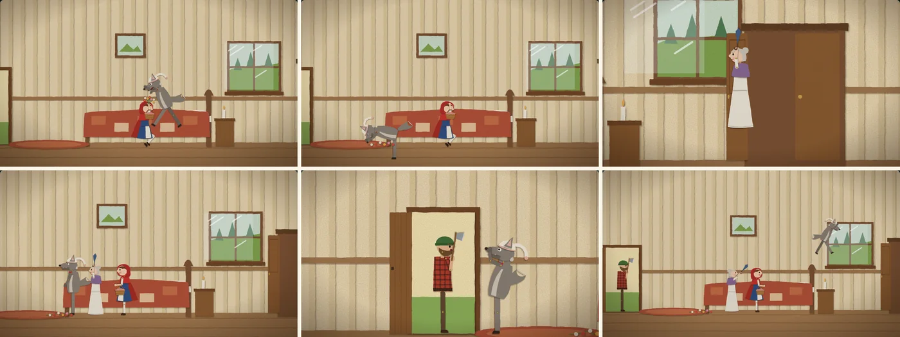
- The wolf leaps; she ducks and cries "Help!"
- Grandma bursts out of the wardrobe and brings her umbrella down on his head.
- He bolts for the front door, where the woodcutter, who heard the cry, steps in.
- Only one way out: through the window.
A story fix is cheap on paper, and expensive once every shot is built.
Everything we made for it
- Sets
- Eight layered sets, each with a blurred copy for close-ups.
- Props
- Basket, a bouquet that grows as she picks it, umbrella, axe, doors that swing, window glass that shatters.
- Sound
- Six acted voices, four music cues, three synthesized beds and about twenty effects.
- Tools
- A puppet baker that turns all 230 paper pieces into images so the film starts at once, a sound synthesizer, and contact sheets of every shot, checked before anyone else watched.
The numbers
The second version
Twelve days later, The Little Horse Crosses the River set a higher bar, and we brought this film up to it. The voices were redone, and a team of agents restaged every scene, with a director reviewing the whole film twice. Now we see her foot step off the path, every story point gets its shot, and the questions build until the music stops, and only then: "EAT".
Where this leaves us
New actions are cheap. The umbrella blow and the dive through the window were each a few lines.
Consistency comes free. A puppet is the same paper in every shot.
It gets cheaper with practice. Puppets, sets, sounds and tools carry over to the next story.
The limits are real too: the look is deliberately simple, and with no painter to hide behind, the story itself has to hold up. We plan to build the Papermorph Skill's picture-book method on this.